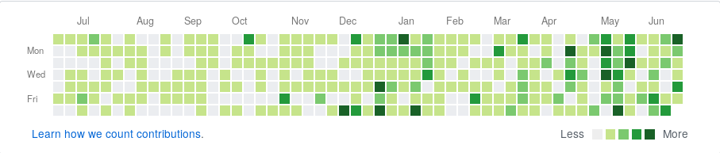

Github commits' emails change
Abstract
You know that Contributions panel on your Github profile page. Let's face it, developers these day take much pride when they can show their consistent work and progress of their own/forked repositories...even when some of their commits are nothing more than a implementations of a single function. Said panel is clear indication to you, future employee or members of your 'coding community' that you are pretty much a big deal with a good work ethic. Imagine in what of pickle of a situation you would be if for some random reason your commits don't show up there. This post addresses the issue of not having proper git configuration(~.gitconfig/) file on your system and commit to github with the wrong email address.
My problem with github and some contributions in limbo
So, yeah, I had the problem myself. I was committing things on a regular basis to github and my repositories but only a very small portion of my commits where showing in the Contributions panel. It took me while to notice that and I was kinda freaked about it as I thought that my 'hard work' will forgotten and the future generations would not be able to see it.
A little research(I literally just click on Learn how we count contributions) about how github actually counts contributions and I found out that the email address of the commits must match the main email of your github account. Some other hints taken from github page about how contributions are counted:
Commits will appear on your contributions graph if they meet all of the following conditions:
-The email address used for the commits is associated with your GitHub account. -The commits were made in a standalone repository, not a fork. -The commits were made:
- In the repository's default branch (usually master)
- In the gh-pages branch (for repositories with Project Pages sites)
The thing is, sometimes I cloned one of my repositories, made some work on it and then committed it pushed it on github, the email address for the commit would be sent to arnaud@localhost.localdomain which is some weird default configuration of debian and absolutely not the address I want to use on github. This commits github to think that commits aren't coming from you.
Proper github configuration
In order to avoid the problem for the future, you have two options. You can set your name and email address manually for each repository you are working on. Just go in the repository's folder and set the user.name and user.email fields like:
git config user.name 'Stanislav Arnaudov' git config user.emial 'stanislav_ts@abv.bg'
This sets the name and the email on a repository 'local' level. After that each commit will have those name and email address. If you want to set global name and email address for your system and not worry about each individual repo, you would have to edit(create if you don't have the file) your ~/.gitconfig file. Somewhere in there you should have something like
[user]
name = Stanislav Arnaudov
email = stanislav_ts@abv.bg
This sets the name and email globally and every commit made on your system will have the proper fields. On git hub, you can see the raw path of a commit with https://github.com/<user_name>/<repo>/commit/<commit_id>.patch. On this page you could inspect the commit and see exactly which email address is associated with it.
tail ~/.gitconfig
git commit --amend -m \"$(git log -1 --pretty=%B)\n\nCloses #$1.\"; \
fi \
}; f"
[user]
name = Stanislav Arnaudov
email = stanislav_ts@abv.bg
[credential]
helper = cache
Fixing the your repositories
But of course, so far we've only prevented the problem of occurring in the future. You probably want to know how do we actually fix the previous 'damage'. This section describes that...and my approach of tackling it.
First, some of my experiments and findings. The thing about git repos - everything is stored in that nifty .git folder. Every delta, every branch, every everything. So, I supposed that if I go there and start changing things, I could probably could change the email address of past commits. If you run grep in your repository
grep -r "arnaud@localhost.localdomain" ./.git
you get all the occurrences of your 'wrong' email in your commits...or everywhere else for that matter. Ok, so if you change those github probably will notice and everything will be OK, right? So, I run sed in conjunction with find like:
find ./.git/ -type f -exec sed 's/arnaud@scc-wkit-clxa-23-139.scc.kit.edu/stanislav_ts@abv.bg/' -i {} +;
This find every regular file in the .git folder and runs sed 's/arnaud@localhost.localdomain/stanislav_ts@abv.bg/' -i on it. With the expression in the quotation marks sed replaces everything that matches 'arnaud@localhost.localdomain' with 'stanislav_ts@abv.bg'. The -i means "inplace" so be careful when running sed like that because you may break something. So I do that and then push onto github...and nothing happens. The thing is git push the things "in" your repo and kinda is disregarding of changes in .git. In some cases, git may refuse to make the push crying "histories don't match"(or something). In those case one would have to call push as
git push --force
which overwrites 'everything' in the github repo. So I do that and....again, this didn't work. When I expected the commits in the repository on github my profile picture still wasn't there. I am not sure what the reason for that is although I was pretty sure I would change at least something while messing with the .git folder.
Here I will stop boring you with my "personal experience" and just give you the solution.
The right solution
After some more research I found this help page on github. I guess the problem is actually not uncommon. The page describers the whole process of "re-authoring" your commit history. They even provide a script that could be run in a bare repository(one only for pushing and pulling from) that changes everything. Something to not - the provided script must be given old(wrong) and new(right one) email to re-placed. This is done because while preforming the "hack" on a shared repo where not one but a few developers have commits. Of course you don't really want to overwrite the email of someone else.
BUT...in my repos I had commits also made from my university's network and the emails of those were completely other beasts. Therefore I change the script a little bit and wrote an extra supplementary script that does absolutely everything. If you want to automate the whole process, copy this:
#!/bin/bash echo "Cloning repo..." git clone --bare $1 new_repo cd ./new_repo echo "Running reindex script..." git filter-branch --env-filter ' CORRECT_NAME="<user name>" CORRECT_EMAIL="<user email>" export GIT_COMMITTER_NAME="$CORRECT_NAME" export GIT_COMMITTER_EMAIL="$CORRECT_EMAIL" export GIT_AUTHOR_NAME="$CORRECT_NAME" export GIT_AUTHOR_EMAIL="$CORRECT_EMAIL" ' --tag-name-filter cat -- --branches --tags echo "Hard-pushing to origin..." git config --global credential.helper cache git push --force --tags origin 'refs/heads/*' cd .. echo "Deleting folder..." rm -rf new_repo
in a .sh file, adjust the <user_name> and <user email> fields with your name and email and run the script like ./file.sh https://github/<user>/<repo>.git. This will:
- Clone the repo in new folder with name new_repo
- Run a slight modification of github's script
- Push the change repo on github(eventually you will be asked to give your username and password)
- Deletes the newly created folder.
At the end everything is as it was but all of the commits in the repo will have the email that was in the script.
Note: This will create a file in your home directory with name .git-credentials and it will contain your github username and password. I do this so I can use git config --global credential.helper cache which removes the necessity of typing your name and pass on every commit.(Yes, I know, I should set up the ssh thing, shut up)
Caution: My script changes the committer's emails and names of ALL commits. If you run the script on a repo with several developers. This could potentially and most likely will cause some people to be angry with you...and rightfully so. I mean, you just ruined someone's Contributions panel...how would you like that if done to you.
And there you have it. With your newly acquired knowledge you could transform your Contributions panel form this: to this.  And you know, the ultimate bragging writes are yours!